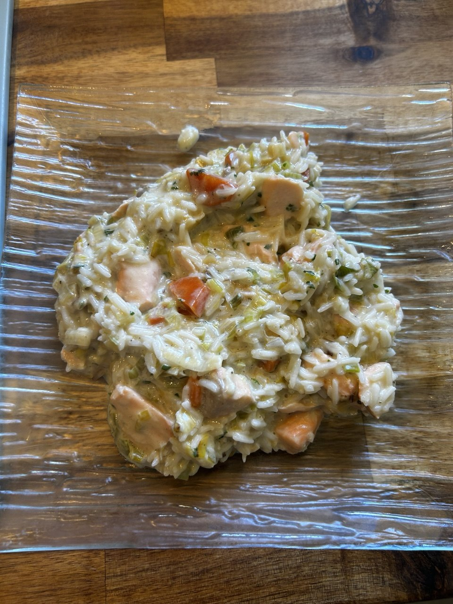

← Recettes

Blanquette Saumon
🐟 Poisson
⚡ Rapide
⏱️ 30 min
👥 4 pers.
🍽️ Plat
Ingrédients
- 4 filets de saumon
- 2 gousses d'ail
- 2 poireaux
- 2 carottes
- 2 échalotes
- 300 g de riz
- 1 brique de crème (20 cl)
- 100 ml de bouillon de légume
- Jus de citron
- Persil
Préparation
-
1Préparer le bouillon
-
2Ciseler l'ail, couper la carotte et le poireau en fine demi-lune
-
3Faire chauffer une poêle avec un filet d'huile à feu moyen-vif et y faire revenir l'ail, la carotte et le poireau 3-4 min
-
4Ajouter le bouillon et baisser le feu. Couvrir et laisser mijoter 10-12 min
-
5Ciseler l'échalote et couper le saumon en cube (retirer la peau au préalable)
-
6Faire fondre une noix de beurre par personne dans une casserole à feu moyen et y faire revenir l'échalote 2-3 min
-
7Ajouter le riz, une fois translucide, ajouter 180 ml d'eau par personne
-
8Laisser cuire à feu doux 13-15 min
-
9Placer le saumon sur les légumes. Ajouter sel et poivre et couvrir 5 min à feu doux
-
10Ajouter la crème, le persil et le jus de citron. Laisser réduire la sauce à feu moyen